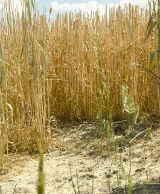

Cornfed: Managing Resources to Build Economic Efficiencies
As one of the largest sectors in American agriculture, corn farmers impact hundreds
of thousands of jobs, infuse billions of dollars into the economy and care for our most critical resources,
all while realizing substantial improvements in production. With contributions to our energy sector through
ethanol, technology through equipment investments and our nutrition through corn feed, farmers are fueling
and feeding our economy across industries. Brent Rogers, of Double R Farms in Hoxie, Kansas, knows this more
than anyone.
Brent began his career in agriculture by working on a family farm. Now, he grows corn,
soybeans and wheat on his own land.
Resources can be scarce and creativity is critical when you farm in a dry
climate, working off of a yearly average of 18” rainfall. At Double R Farms, Brent has enabled no-till
practices and technologies that support moisture capture and crop coverage to prevent evaporation.
Thoughtful practices around seeding populations and spoon-feeding crops is how Brent maintains efficiency
and maximizes economic impact, ensuring he doesn’t waste resources – chemical or financial – which supports
overall economic health of the community.
What is no-till farming?
No-till farming is a technique used by farmers to minimize or eliminate soil
disturbance while growing crops. It's used to prevent soil erosion, improve soil quality, increase
productivity and keep carbon in the soil, limiting the need for chemical fertilizers and lowering
greenhouse gas emissions.
What are cover crops?
A cover crop is any crop grown used to cover the soil. The benefits of cover crops
include soil erosion prevention, improved soil health, enhanced water availability, weed deterrence,
pest and diseases control, improving crop yield potential, attracting pollinators and supplying a
habitat for beneficial insects and food to animals.
Learn more

For crops like wheat, like this winter wheat, last year's crop residue and
litter remain on the soil surface, offering protection from wind and water erosion. Credit: USDA
Brent uses technologies that help him manage his irrigation remotely and
provides him with real time information and data about their operations. Using innovative automations
creates efficiencies for the workers on the farm and allows the team to spend more time on activities and
investments that support feeding and fuelling the community.
Beyond their investments in technology
that support the nation’s economy, farmers are one of the reasons small businesses in rural America – like
banks, grocery stores, car dealerships and more – are successful. When farmers purchase chemicals,
mechanical parts, equipment, fuel, and more, the business of farming is fueling local businesses that feed
into the larger economy.
Brent’s focus on creating a more innovative and sustainable farm supports
all areas of agriculture growth, but also community growth. That’s cornfed economic impact.